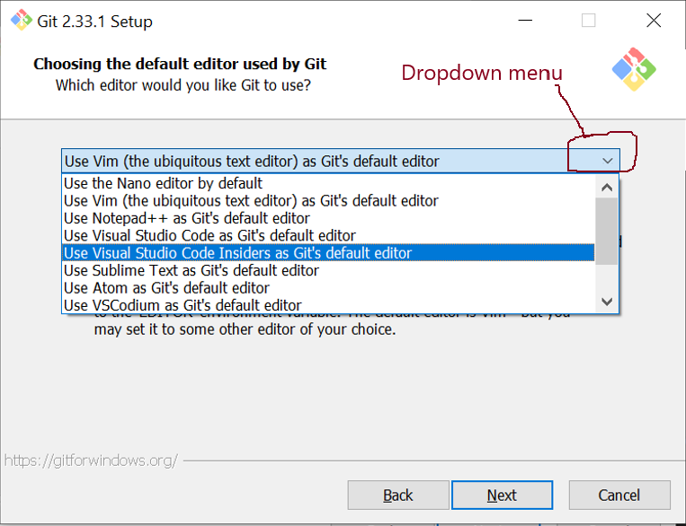
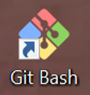
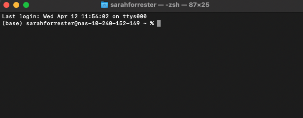
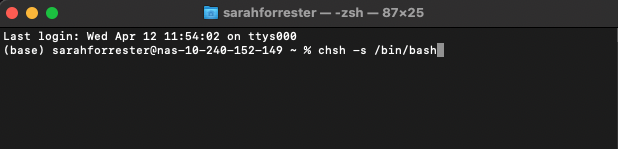
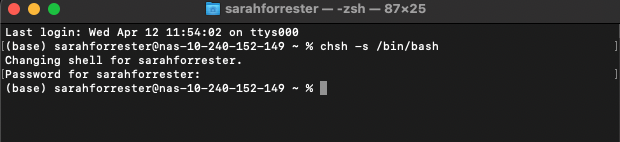
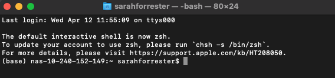
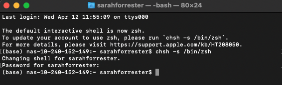
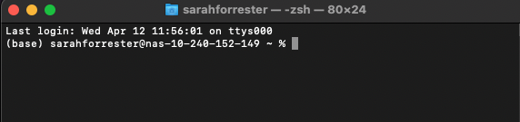

Metagenomics: Setup
Overview
The software and data used for analysis during the course are hosted on an Amazon Web Services (AWS) virtual machine (VM) instance. A copy of such instance that requires no previous setup by you will be made available to you at no cost by the Cloud-SPAN team.
To accesss and use the resources in your AWS instance from your personal computer, you will use a command-line interface (CLI) program that is widely known as the shell or terminal. The shell is available by default for Linux and Mac users (so they don’t need to install any software).
Windows users will need to install Git for Windows on their computer as described below prior to the course. Git includes Git Bash which is a Windows version of the Unix Bash shell, the most widely used shell and the default shell in Linux systems.
Mac users may need to configure the terminal to use the Bash shell as described below. Mac computers usually have installed both shell programs Zsh and Bash, and Zsh is the default shell used by the terminal. Unfortunately, Zsh may not be configured to locate the ssh program which you need to login to your instance. Configuring the terminal to use Bash solves the problem.
You will need to use a laptop or desktop to take this course. Due to the need both to follow the instructor in zoom and to perform analyses, tablets and ipads are not suitable for using during this course. Having both an up to date browser and a stable internet connection is important.
Before the course you will receive via email the information that you will need to login to your AWS instance during the course.
Install Git Bash — Windows users
The steps below correspond to the installation of Git for Windows version 2.33.1 from scratch. The ins tallation of a more recent version, or updating a previously installed version, may show different wording in the screen messages mentioned below or may vary slightly in the number of steps to follow. Choose as many of the options below as possible.
Click on this link: Git for Windows download page
Once in that page, click on Download to download the installer.
Once the installer is downloaded,
- double click on it
- you will then be asked some questions and to select an option for each question.
- each question is shown below in Italics, and the selection to be made is shown in bold
- during the actual installation each question will be displayed at the top of a small window but we are showing only the small window for the question that requires somewhat more help
- the first question is next:
The app you’re trying to install isn’t a Microsoft-verified app ..?
- Click on Install anyway
Do you want to allow this app to make changes to your device?
- Click on Yes
GNU General Public License
- click on Next
Select Destination Location
- click on Next (don’t change the location shown).
Select Components
- click on Additional Icons (it will also select “On the Desktop” option)
- then click on Next
Select Start Menu Folder
- click on Next (don’t change the folder name shown)
Choosing the default editor used by Git
- select Use the nano editor by default and click on Next.
- NB: you may need to click on the dropdown menu and to scroll up with the mouse to see this option – see the figure:

Adjusting the name of the initial branch in new repositories
- keep the selected (or select the) option Let Git decide and click on Next.
Adjusting your PATH environment
- keep the selected, Recommended option Git from the command line and also from 3rd-party software
- or selec it, and click on Next.
- NB: if this option is not selected, some programs that you need for the course will not work properly. If this happens rerun the installer and select the appropriate option.
Choosing the SSH executable
- keep the selected (or select the) option Use bundled OpenSSH and click on Next.
Choosing HTTPS transport backend
- keep the selected (or select the) option Use the OpenSSL library and click on Next.
Configuring the line ending conversions
- keep the selected (or select the) option Checkout Windows-style, commit Unix-style line endings and click on Next.
Configuring the terminal emulator to use with Git Bash
- keep the selected (or select the) option Use MinTTy (the default terminal of MSYS2) and click on Next.
Choose the default behaviour of
git pull- keep the selected (or select the) option Default (fast-forward or merge) and click on Next.
Choose a credential helper
- keep the selected (or select the) option Git Credential Manager Core and click on Next.
Configuring extra options
- keep the selected option (Enable File System Caching) and click on Next.
Configuring experimental options
- click on Install without selecting any option
Click on Finish
Run Git Bash by double clicking on the Git Bash icon in your Desktop screen.

Exit Git Bash by pressing the keys Ctrl and d (Ctrl-d) simultaneously.
Configure your Terminal to use Bash — Mac users
The instructions below will guide you to configure your terminal to use the Bash shell. Do so only if you cannot login to your instance as described in the Episode Logging onto the Cloud, and your terminal displays the error message “ssh command not found” instead when trying to login.
You will also find below the instructions to revert your terminal configuration if you want to. Do so only after you have finished the course.
Configuring the terminal to use Bash
First check that your terminal is actually running the Zsh shell. As shown in the screenshot below, the top bar of your terminal should show zsh next to your username on the right. If so, continue; otherwise get in touch with the Cloud-SPAN team.

Enter or copy-paste the chsh command as shown below, see also the screenshot — chsh stands for “change shell”:
1% chsh -s /bin/bash- 1
- Change the terminal shell to bash.

Enter your password when prompted to do so:

The change you have made will take effect once you open a new terminal (you can close the terminal where you run the chsh command). Once you open a new you terminal, check that it displays bash in the top bar as in the screenshot below:

Note that new terminals that you open will show the message:
The default interactive shell is now zsh.
To update your account to use zsh, please run ‘chsh -s /bin/zsh’.
Just ignore it.
You should now be able to login to your instance in the cloud. If not, get in touch with the Cloud-SPAN team.
Configuring the terminal back to use Zsh
Once you finish the course, if want revert your terminal to its previous configuration, enter or copy-paste the chsh command below into a terminal and enter your password when prompted, see the screenshot:
1% chsh -s /bin/zsh- 1
- Change the terminal shell to zsh.

Open a new terminal and check that zsh is displayed in the top bar of the terminal:
